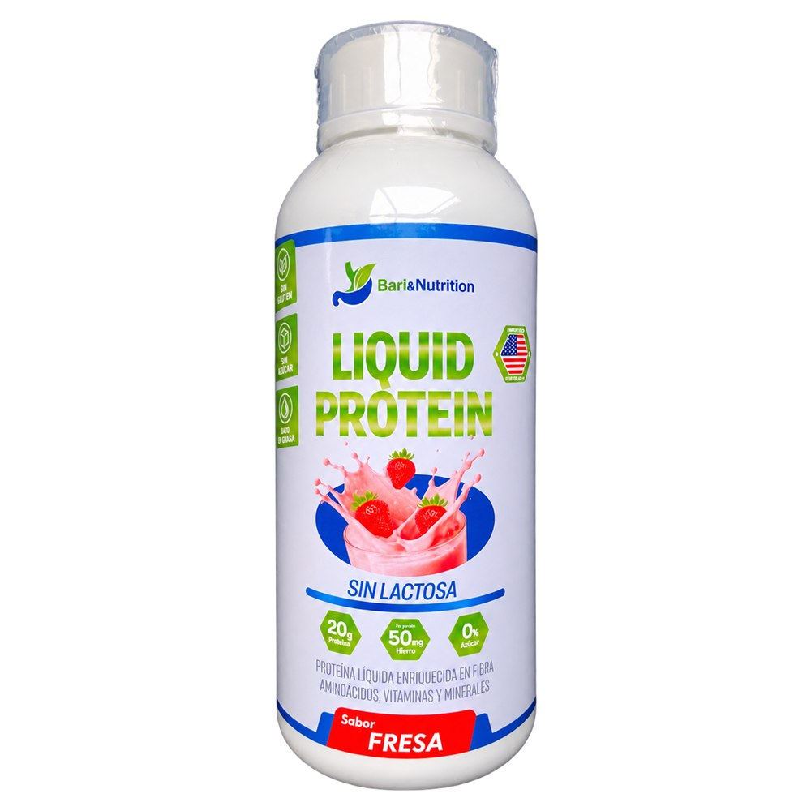
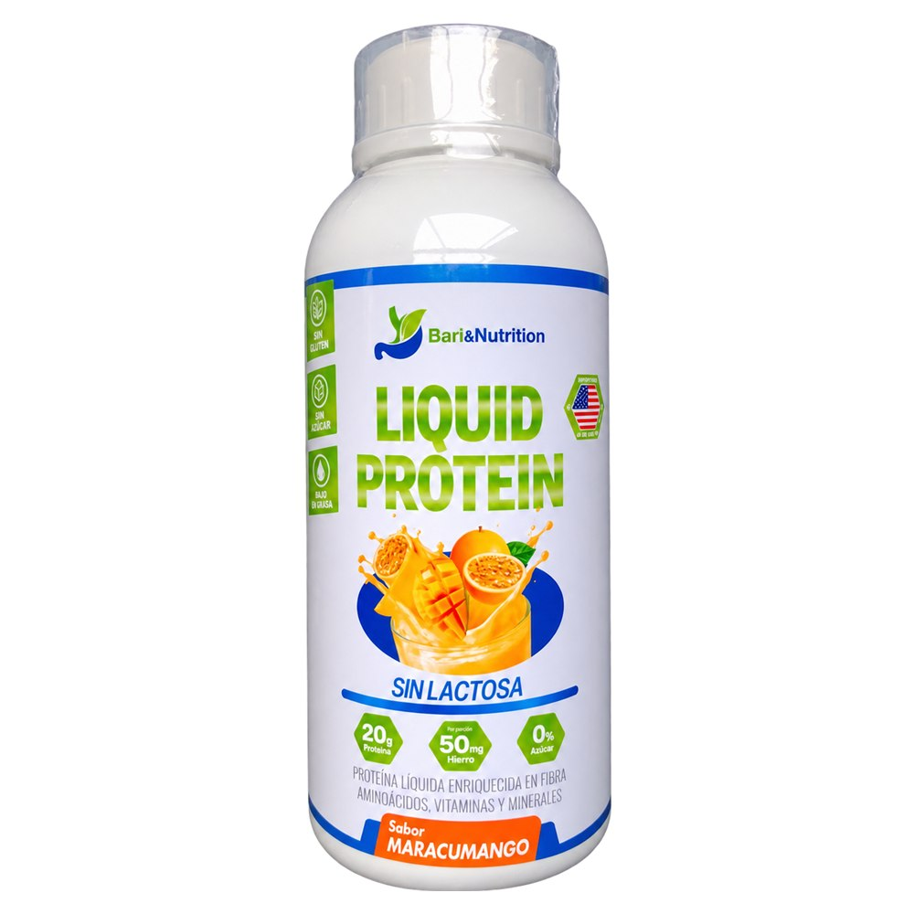
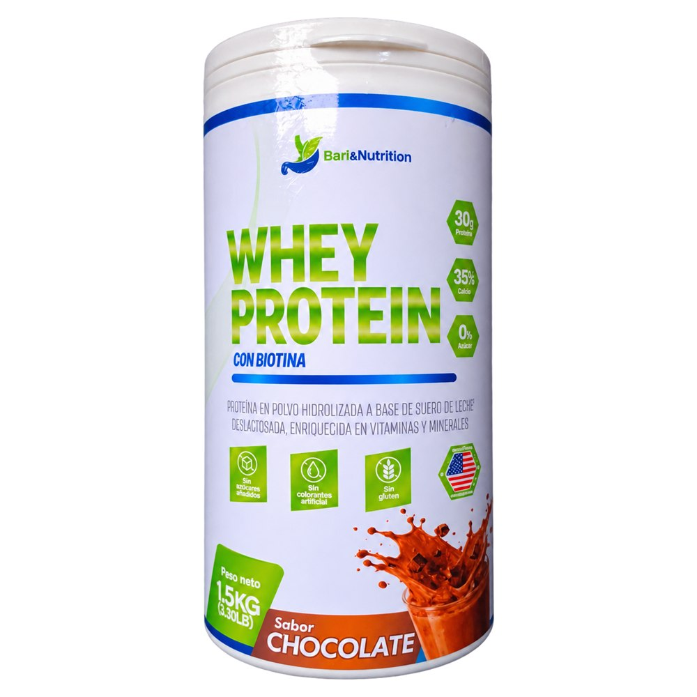
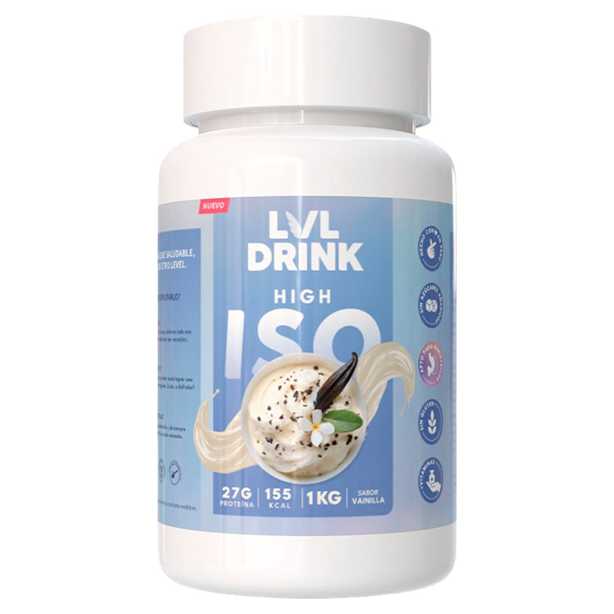
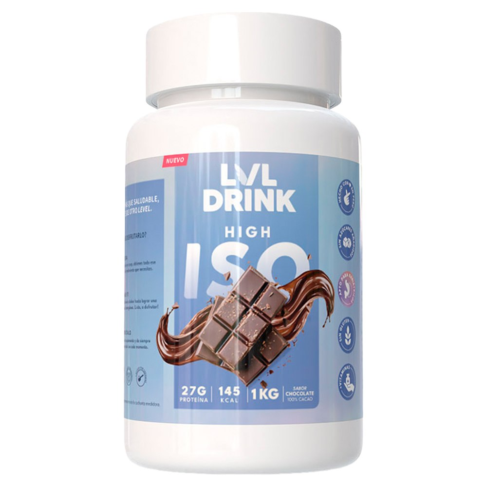

Después de un bypass gástrico o una manga gástrica, cubrir tu requerimiento diario de proteína es la prioridad número uno. Aquí encuentras proteína líquida lista para tomar (ideal para las primeras etapas) y proteína en polvo sin lactosa y sin azúcar, aptas para nutrición bariátrica. Envíos a todo el Perú.

Proteína líquida lista para consumir. 20g de proteína por porción de 30ml. Sin lactosa, 0% azúcar. Enriquecida con fibra, aminoácidos, vitaminas y minerales.

Proteína líquida lista para consumir. 20g de proteína por porción de 30ml. Sin lactosa, 0% azúcar. Enriquecida con fibra, aminoácidos, vitaminas y minerales.

Proteína en polvo hidrolizada a base de suero de leche deslactosada. 30g de proteína por servicio. Enriquecida con vitaminas y minerales.

Proteína en polvo hidrolizada a base de suero de leche deslactosada. 30g de proteína por servicio. Enriquecida con vitaminas y minerales.

Proteína concentrada de suero de leche (WPC). 27g de proteína por porción. Endulzada con stevia natural, sin azúcares añadidos, sin gluten.

Proteína concentrada de suero de leche (WPC). 27g de proteína por porción. Sabor a chocolate 100% cacao, endulzado con stevia natural. Sin azúcares añadidos, sin gluten.
Las dos cubren lo mismo —aportar proteína cuando la comida sola no alcanza—, pero no se usan en el mismo momento. La diferencia no está en la calidad, sino en la textura y en el volumen que tu estómago tolera en cada etapa del post operatorio.
| Proteína líquida | Proteína en polvo | |
|---|---|---|
| Presentación | Botella lista para tomar, sin preparación. | Polvo que se disuelve en agua. |
| Cuándo suele usarse | En las primeras semanas, mientras la alimentación es líquida. | Habitualmente a partir de la etapa de blandos y en el mantenimiento. |
| Volumen por toma | Muy pequeño: porciones de unos 30 ml. | Mayor, porque necesita agua para disolverse. |
| Aporte por porción | Alrededor de 20 g. | Entre 27 y 30 g según el producto. |
| Ventaja principal | Suele tolerarse mejor cuando el estómago admite muy poco volumen. | Permite ajustar la cantidad y rinde más por envase. |
El paso de un formato al otro suele ocurrir cuando ya toleras texturas blandas, orientativamente a partir del segundo mes. El momento exacto lo marca tu equipo médico según cómo avanza tu recuperación, no la etiqueta del producto. Si quieres ubicarte, puedes revisar las etapas postoperatorias una por una.
Después de un bypass gástrico o una manga gástrica el estómago admite muy poco volumen, así que cada toma tiene que rendir. Estos son los puntos que suelen revisarse en la etiqueta antes de decidir:
Estas herramientas son gratuitas y te ayudan a llegar con las preguntas correctas a tu control.
Este contenido es educativo y no reemplaza la consulta con un profesional. Los suplementos no sustituyen una alimentación balanceada. Consumir únicamente bajo indicación de su médico o nutricionista.